Install it on your own server, get it ready to send, and write your first email campaign. Step by step, no technical background needed.
MailStudio is email campaign software that runs on a server you rent. You own the server, your subscriber list and everything you send. Nobody charges you per contact.
This book takes you from nothing to a sent campaign. Work through it in order the first time. Afterwards, Parts 3 and 4 are there to look things up.
| Part | What you'll do | Time |
|---|---|---|
| 1. Install | Rent a server, point an address at it, run one command. | 20–30 minutes |
| 2. Get set up | Your business details, Amazon SES (which delivers your email), your domain, and permission to send to anyone. | 45 minutes, then up to a day waiting for Amazon |
| 3. Everyday use | Bring in your subscribers, write an email, send it, see how it went. | Your first email: about 5 minutes |
| 4. Looking after it | Updates, backups, and what to do when something goes wrong. | A few minutes a month |
What to have ready before you start a chapter.
Something that makes the job easier.
A common mistake, and how to avoid it.
Something that stops things working, or gets you into trouble, if it's missed.
A few steps in Part 1 ask you to type a command into your server. They look like this:
mailstudio status
Type (or paste) the whole line exactly as shown, then press Enter. Lines starting with # are notes, not commands. That's all the command line you'll need: everything else happens in your web browser.
Rent a small server, give it an address like mail.yourbusiness.com, and run the installer. At the end you'll have MailStudio running securely at that address.
Ten minutes gathering these now saves an hour of stopping and starting later.
yourbusiness.com, and the login for wherever its DNS is managed (usually where you bought it: GoDaddy, Crazy Domains, Cloudflare, VentraIP and so on).news@yourbusiness.com. Your campaigns will come from it. It can't be a Gmail, Outlook or Yahoo address.Three things work together, and it helps to know which is which:
| Piece | What it does | Where it lives |
|---|---|---|
| MailStudio | Where you keep your contacts, design emails and press Send. It runs on your server. | Your server, at e.g. mail.yourbusiness.com |
| Amazon SES | Simple Email Service. It actually delivers the emails, reliably and cheaply. MailStudio hands each email to it. | Your own AWS account |
| Your domain's DNS | The public address book for your domain. You add a few records so the world can find your server and trust your emails. | Where you manage your domain |
Your server never sends email directly, so it doesn't matter that many hosting companies block email ports. Everything goes through Amazon.
MailStudio needs its own address. A subdomain of your website works best. For example, if your website is yourbusiness.com, use:
mail.yourbusiness.com
This is where you'll log in, where your signup page lives, and where unsubscribe links point. Your subscribers will see it in links, so keep it tidy. You'll use it in Chapter 3.
Keep a note open while you work through Parts 1 and 2 and jot down your server's IP address, your MailStudio address, your AWS region and your access key ID. You'll need them more than once.
A virtual private server (VPS) is a small computer in a data centre that you rent by the month. MailStudio needs only the smallest kind.
Any provider that offers Ubuntu servers will do. Choose a data centre near you and your subscribers. Well-known options with Australian locations include Vultr, DigitalOcean, Linode (Akamai) and BinaryLane. Elsewhere, Hetzner and OVH are popular.
203.0.113.25. Write it down.Some providers put a firewall in front of your server in their dashboard. If yours does, allow incoming ports 80 and 443 (web traffic). MailStudio's installer opens them on the server itself, but it can't change the provider's firewall.
You'll type a few commands on the server. Most providers have a Console button in the dashboard that opens one in your browser. Or connect from your own computer:
Open Terminal and type (with your server's IP):
ssh root@203.0.113.25
Open PowerShell or Windows Terminal and type the same:
ssh root@203.0.113.25
The first time, it asks whether you trust the server: type yes. Then enter the password (nothing appears as you type; that's normal). You're in when you see a prompt ending in #.
curl -sSI https://github.com | head -1
It should print a line starting HTTP/2 200. If it says Could not connect or Network is unreachable, the server has no public IPv4 address: check the network settings in the provider's dashboard (step 4 above). On a brand-new server it's usually quickest to delete it and create a new one with Public IPv4 on.
Tell the world that mail.yourbusiness.com lives at your server's IP address. Do this before installing: the installer checks it, and the secure certificate depends on it.
| Field | Enter |
|---|---|
| Type | A |
| Name / Host | mail (just the first part; some providers want the full mail.yourbusiness.com) |
| Value / Points to | Your server's IPv4 address, e.g. 203.0.113.25 |
| TTL | Leave the default, or choose 5 minutes / 300 |
Set the record to DNS only (a grey cloud, not orange) while you install. Caddy, the part of MailStudio that handles the secure certificate, needs to reach your server directly.
On your server, type:
getent hosts mail.yourbusiness.com
When it prints your server's IP address, you're ready. If it prints nothing, wait a few minutes and try again. (The installer does this check for you too, and waits if needed.)
One command does the rest: it installs Docker, sets up MailStudio with a secure https:// address, adds a daily backup and a mailstudio command for looking after it.
Type the command exactly as shown, ending in | sudo bash. With | sh the installer just tells you to use bash.
curl -fsSL https://get.mailstudio.email | sudo bash
mail.yourbusiness.com.MailStudio installer ==> Checking this server ✓ Ubuntu 24.04 LTS, x86_64, 1963 MB memory ==> Your MailStudio address Address: mail.yourbusiness.com Your email, for certificate notices (optional): you@yourbusiness.com ✓ https://mail.yourbusiness.com ==> Docker ✓ Docker installed ==> Checking mail.yourbusiness.com points to this server ✓ mail.yourbusiness.com → 203.0.113.25 ==> Writing the setup to /opt/mailstudio ✓ compose.yml, Caddyfile and .env ✓ Added the 'mailstudio' command and a daily backup ==> Starting MailStudio Waiting for the HTTPS certificate (usually under a minute)... ✓ Running at https://mail.yourbusiness.com MailStudio is installed. Open https://mail.yourbusiness.com to create your account. Do it now: the first person to open it becomes the owner.
| Message | What to do |
|---|---|
| “… points to: nothing yet. It needs to point to this server” | Your A record isn't visible yet, or has the wrong IP. Check Chapter 3, wait a few minutes, then press Enter to check again. |
| “Something else is using port 80 or 443” | Another web server came with the server image. The message shows its name; stop it as suggested (e.g. systemctl disable --now nginx), then run the installer again. |
| “MailStudio started, but https://… isn't answering yet” | Usually the provider's firewall is blocking ports 80 and 443 (see Chapter 2), or the A record is wrong. Fix it, then run mailstudio logs caddy to watch Caddy try again. It retries by itself. |
| “Run it as root” | Put sudo before bash, exactly as in step 1. |
| “MailStudio's installer needs bash” | You typed | sh. Use | sudo bash, exactly as in step 1. |
| “This server has no public IPv4 address” | The server was created without one (Chapter 2, step 4). Turn it on in the provider's dashboard and restart the server, or create a new server with Public IPv4 on. |
| “This server can't reach the internet” | Outgoing connections are blocked. Check the provider's firewall settings for the server: outgoing traffic must be allowed. |
| “The installer stopped unexpectedly (line …)” | Something nobody planned for. Run the installer again; if it stops at the same place, report it with everything it printed. |
Running the installer again is always safe. It keeps your data and settings, and fixes up the setup files. It's the first thing to try if you change your address or something seems broken.
Open your MailStudio address in a web browser straight away.
Until an account exists, the first person to open the address becomes the owner. Create yours as soon as the installer finishes.
https://mail.yourbusiness.com. You'll see Welcome to MailStudio.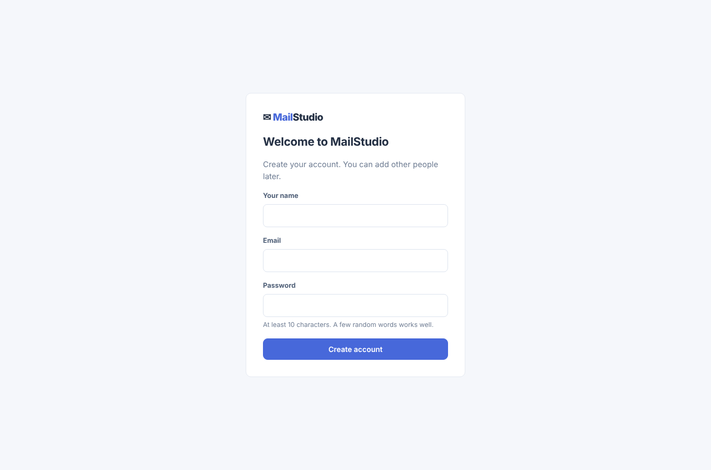
You can add other people later under Users. Everyone who can log in can do everything, so only add people you trust.
Seven steps in the app's Get set up guide. Each one ticks itself off once it's really working, and the bar at the top shows how many are left.
Steps 1 and 2 take two minutes: who you are, and who your emails come from.
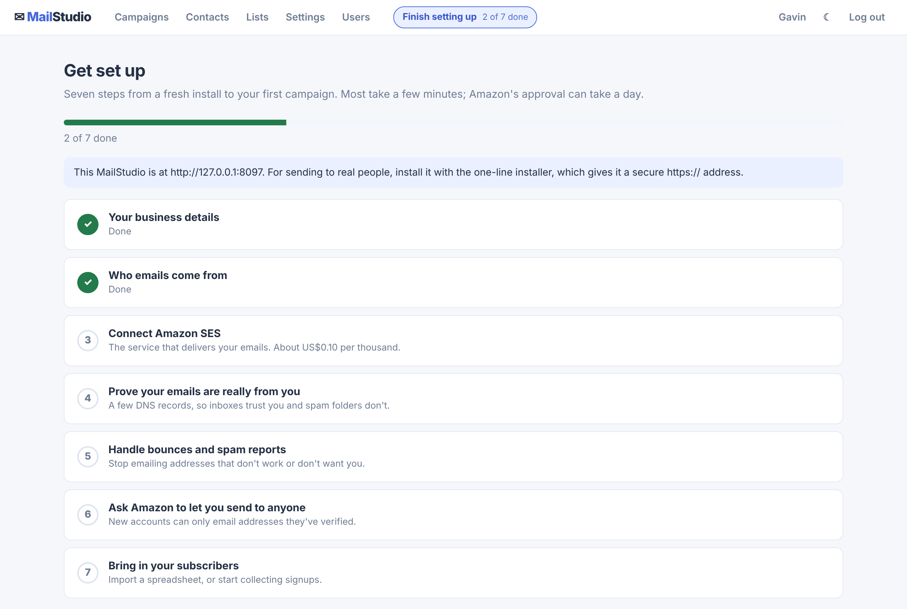
Enter your business name and postal address. Both appear at the bottom of every email. Anti-spam laws in Australia, the US, the EU and elsewhere require a real postal address in marketing email; a PO Box is fine.
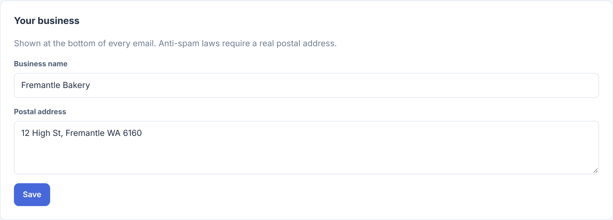
news@yourbusiness.com.hello@yourbusiness.com.The from address must be at a domain you control: Amazon will only send from a domain you've proved is yours (Chapter 8). Gmail, Outlook and Yahoo addresses won't work. The address should be able to receive replies, so set up the mailbox (or a forwarder) with your email provider too.
Amazon Simple Email Service delivers your emails. You'll create a user in your AWS account that's allowed to send email and nothing else, and give MailStudio its keys.
An Amazon Web Services account. If you don't have one, create it at aws.amazon.com (it asks for a card and a phone number). Then sign in to the AWS console.
At the top right of the AWS console is a region menu. Pick the one nearest your subscribers, for example Asia Pacific (Sydney) ap-southeast-2, and stay in it for every step in this part. Amazon SES settings are separate in each region.
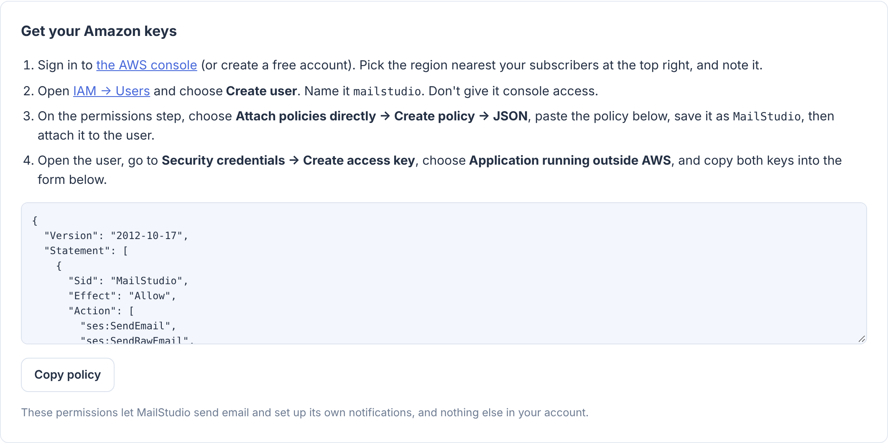
mailstudio. Leave Provide user access to the AWS Management Console unticked: this user is only for MailStudio. Choose Next.MailStudio and choose Create policy.MailStudio, tick it, then Next → Create user.AKIA) and the Secret access key. The secret is shown only once; if you lose it, delete the key and make another.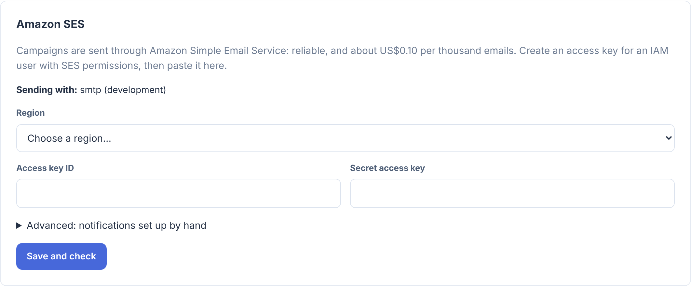
You'll almost certainly see “Your SES account is in the sandbox”. That's normal for every new account, and Chapter 10 deals with it.
Anyone with these keys can send email as you. Don't email them or put them in a shared document. If they leak, delete the access key in IAM straight away, create a new one, and paste it into MailStudio.
Inboxes trust email that's cryptographically signed by the domain it claims to come from. You'll add four records to your domain's DNS, and MailStudio checks each one for you.
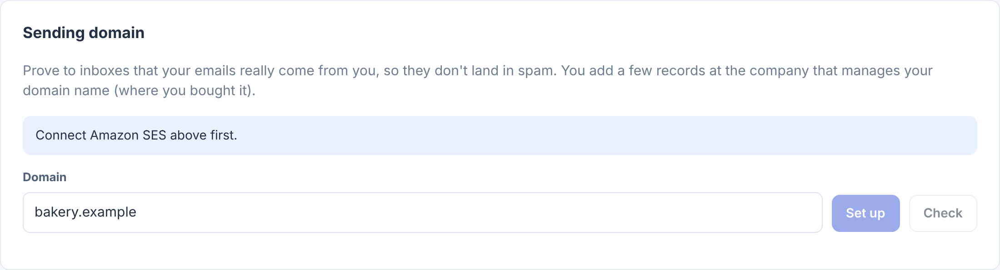
| Type | Name (host) | Why |
|---|---|---|
| CNAME ×3 | xxxx._domainkey.yourbusiness.comthree different, long codes | DKIM. Lets Amazon sign your emails on your domain's behalf. Each points to a value ending in .dkim.amazonses.com. |
| TXT | _dmarc.yourbusiness.com | DMARC. Required by Gmail and Yahoo for bulk senders. MailStudio suggests v=DMARC1; p=none; rua=mailto:dmarc@yourbusiness.com, which asks for reports without blocking anything. |
Many DNS providers add your domain to the end of the name automatically. If yours does, enter only the part before .yourbusiness.com, e.g. abc123._domainkey, otherwise you end up with abc123._domainkey.yourbusiness.com.yourbusiness.com and the check stays at “Missing”. If you're unsure, add it one way and press Check again.
If _dmarc already exists (perhaps your email provider set one up), keep it and don't add a second: a domain may only have one. MailStudio shows it as found. SPF needs no change for Amazon SES; MailStudio only warns if your domain has two SPF records, which breaks SPF for all your email.
When an address doesn't exist, or someone marks your email as spam, Amazon tells MailStudio, and that address is never emailed again. One button sets this up.
mailstudio, in your AWS account, and connects them to your server. Amazon then sends a confirmation message, which MailStudio accepts by itself.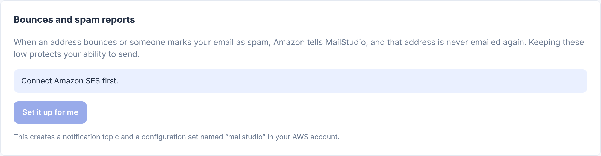
Amazon watches your bounce rate (emails to addresses that don't exist) and complaint rate (people pressing “Report spam”). If they climb too high, around 5% bounces or 0.1% complaints, Amazon reviews and can pause your account. Stopping at once when an address bounces or complains keeps you well clear. Every campaign report shows both rates, in red if they're getting risky.
The mailstudio user is missing a permission. Open the MailStudio policy in IAM, choose Edit → JSON, replace it with the current one from step 3, save, and try again.
Every new SES account starts in a “sandbox” where it can only send to addresses it has verified. A short form lifts that, usually within a day.
“We are a bakery in Fremantle. We email a monthly newsletter to customers who signed up on our website or in our shop. Website signups confirm their address by email before they're added. Every email has a one-click unsubscribe link and our postal address. Bounces and complaints are handled automatically through SNS notifications, and those addresses are never emailed again. We expect to send about 2,000 emails a month.”
You can still send test emails while in the sandbox, to addresses Amazon has verified. Once your domain is verified (Chapter 8), any address at that domain counts, so send tests to yourself at you@yourbusiness.com. To test with another address, such as your Gmail, add it in SES under Identities → Create identity → Email address and click the link Amazon sends.
They usually want more detail. Reply explaining how people sign up, how you handle unsubscribes, bounces and complaints, and roughly how much you'll send. Mention that you only email people who asked to hear from you.
Bring in your subscribers, collect new ones, write an email and send it.
A contact is a person. A list is a group of people who agreed to get a particular kind of email from you. Most businesses need just one list, such as “Newsletter”.
Never import a bought list, people from a business card pile, or customers who weren't told they'd get marketing email. It's against the law in most countries, Amazon will suspend your account for it, and it ruins how well your emails get delivered to everyone else. MailStudio asks how each person agreed, and keeps the answer.
Choose Lists → New list, give it a name (subscribers may see it, e.g. in confirmation emails) and, if you like, a description for yourself.
email; first name and last name are used too, and other columns are kept with each contact. (See Appendix D.)2026 customers), then choose Import.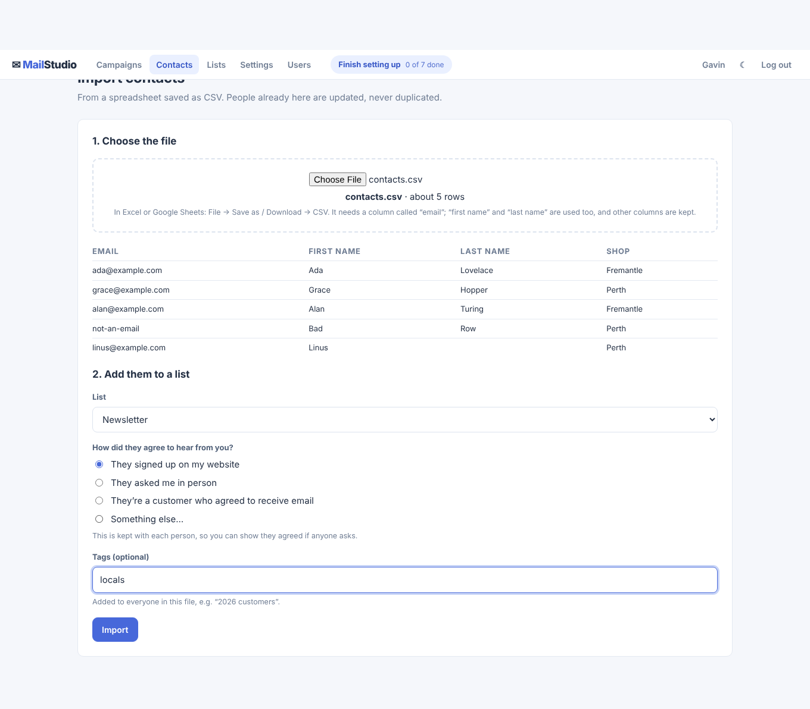
The summary shows how many contacts were new, updated or left off the list, and lists any rows with problems (usually a mistyped address). Importing the same file again doesn't create duplicates. People who previously unsubscribed are never added back by an import.
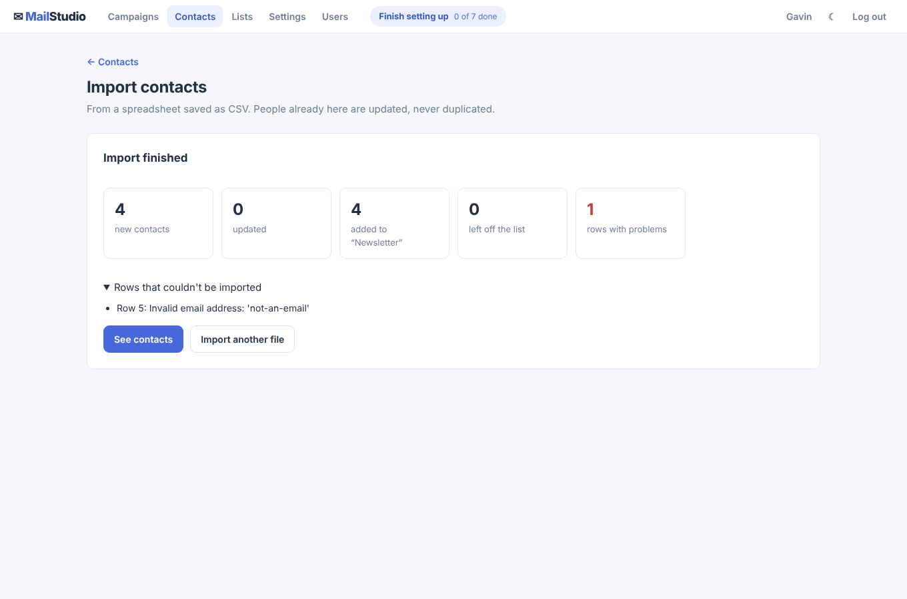
Under Contacts, search by email or name, or filter by list. Choose an address to open it: you can change their details and tags, add them to a list, unsubscribe them, and see their history, the record of when and how they agreed and unsubscribed.
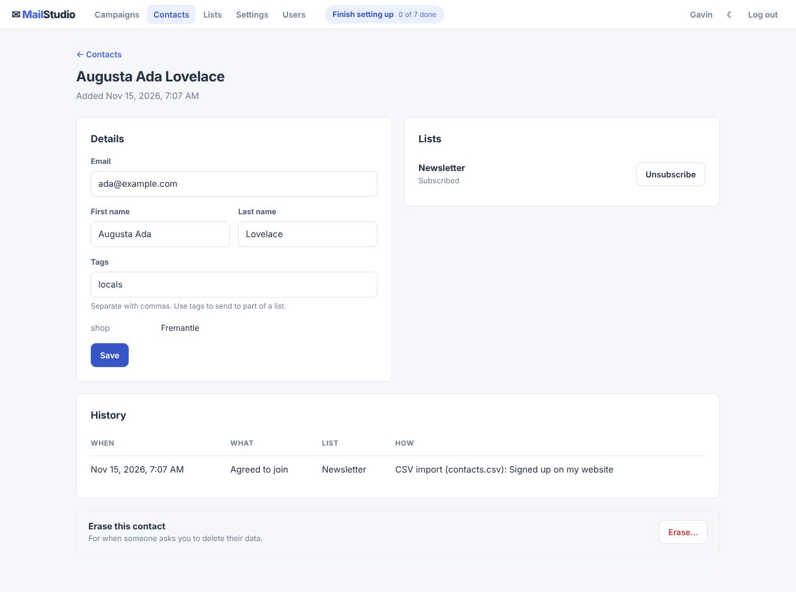
| They ask you to… | Do this |
|---|---|
| Stop emailing them | Open their contact and choose Unsubscribe next to the list. (Most people use the link in the email, which does this for them.) |
| Never email them again, ever | Contacts → Addresses never emailed, and block the address. |
| Delete their data | Open their contact and choose Erase… at the bottom. If they had unsubscribed or bounced, the address stays blocked so it's never emailed again. |
Let people join your list themselves, from a page MailStudio hosts or a form on your own website.
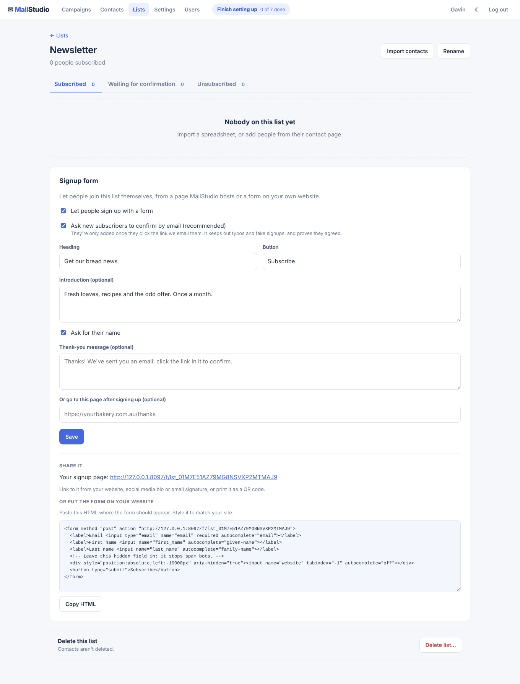
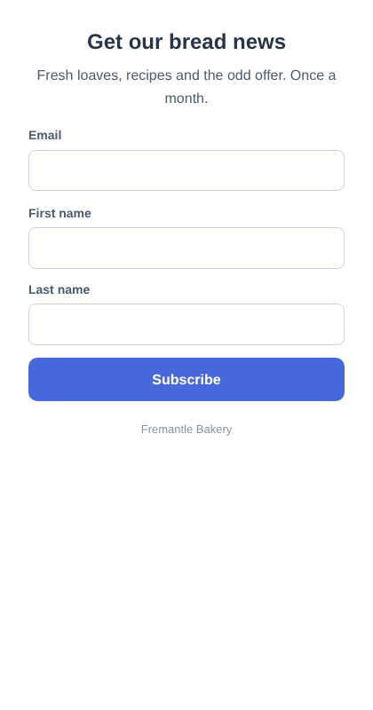
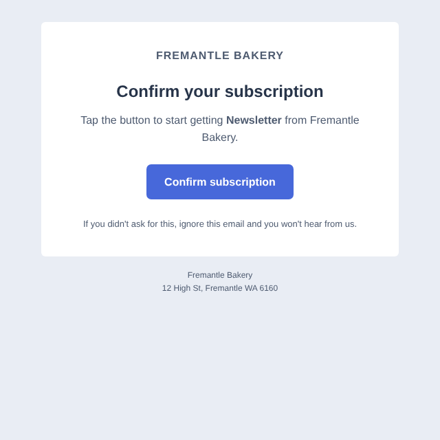
website field: it catches spam bots.People waiting to confirm appear on the list's Waiting for confirmation tab. They aren't emailed until they confirm, and confirmation links expire after 14 days.
Confirmation emails are sent through Amazon SES. Until your account leaves the sandbox (Chapter 10), they only reach verified addresses, so test the form with your own address at your domain.
Emails are built from sections, like a header, a feature, some text and a button. Change the words and pictures, rearrange them, and see exactly what your readers will get.
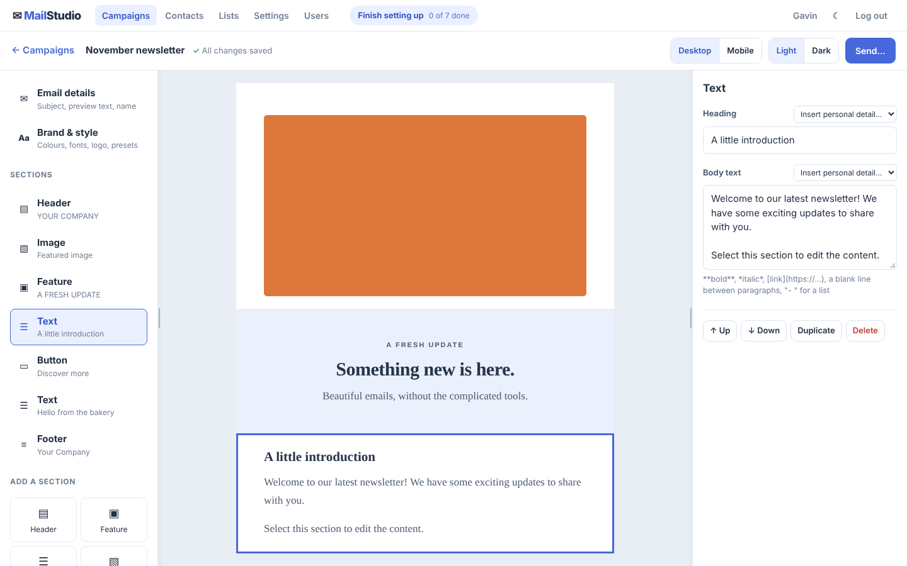
Drag the thin bars either side of the email to make the side panels wider or narrower (double-click one to put it back); MailStudio remembers your widths. The logo and the menu along the top take you anywhere else in the app, and save your changes first.
Text boxes understand a little formatting, written as plain characters:
| Type | To get |
|---|---|
**fresh sourdough** | bold |
*this week only* | italic |
[our menu](https://yourbusiness.com/menu) | a link reading “our menu” |
| A blank line | a new paragraph |
Lines starting with - | a bulleted list |
Personal details: the Insert personal detail… menu above a text box adds the reader's first name, last name or email. {{first_name|there}} means “their first name, or ‘there’ if we don't know it”, so “Hi {{first_name|there}}” becomes “Hi Ada” or “Hi there”.
In an image setting, choose Upload… and pick a photo, or paste the address of an image already online. Uploads are resized and compressed for email automatically. Always fill in the description: it's shown when pictures are switched off, and read aloud to blind readers.
Choose Brand & style (top left) to set your logo, colours, fonts and spacing, or apply one of the three styles: Modern, Editorial or Minimal. Any section can have the feature background colour: select it and tick Feature background in its settings (Feature, Offer, Image + Text and Footer start with it on). Under Colours, Light and Dark mode choose which palette you're editing, and the preview shows that palette. Dark mode colours are used by mail apps like Apple Mail and Outlook when the reader has dark mode on. When it looks right, choose Use as default brand so every new campaign starts with it.
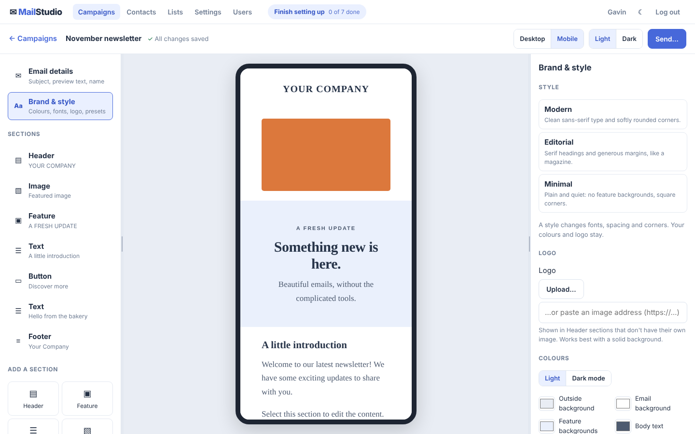
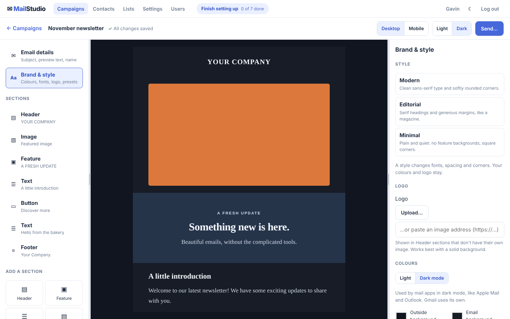
Every email automatically gets your postal address and a working unsubscribe link at the bottom, even if you delete the footer section.
Choose Send… at the top right of the editor. One page covers who gets it, a test, a final check, and when.
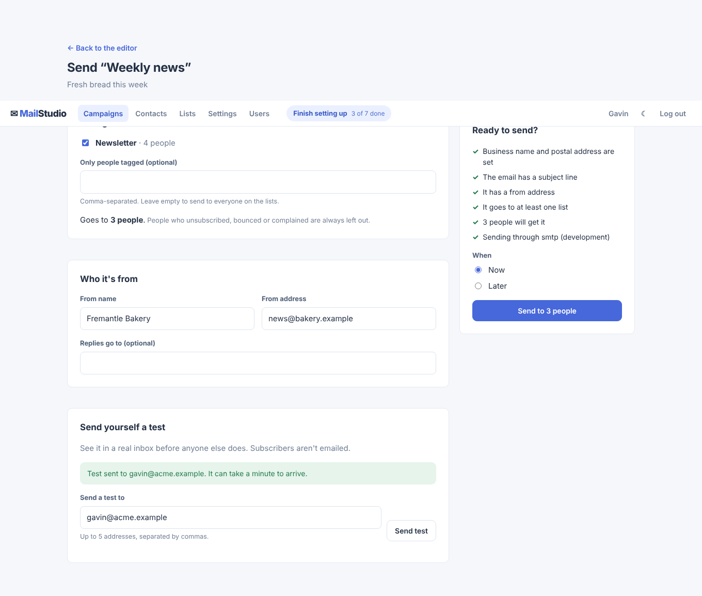
fremantle). The count underneath is exactly how many people will get it: anyone who unsubscribed, bounced or complained is always left out.After sending, the campaign opens its report. While it's going out it updates by itself, and you can Pause, Resume or Stop. A scheduled campaign can be Cancel and edit-ed right up until it starts.
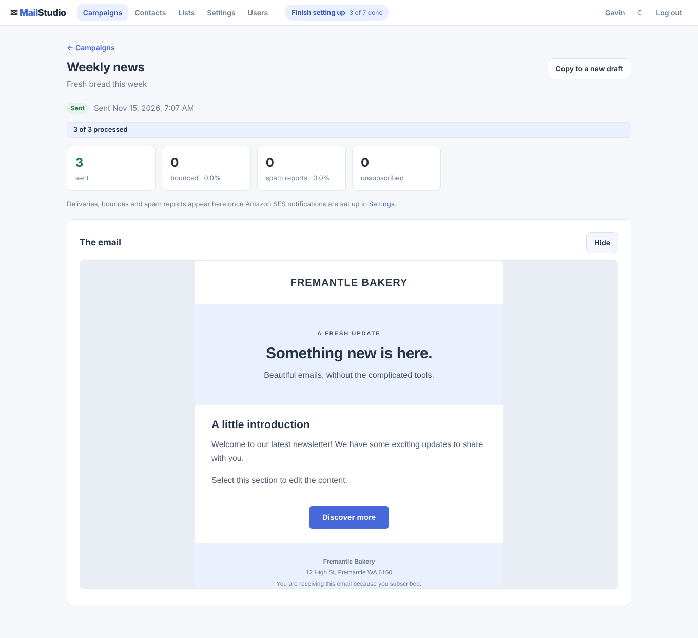
| Number | What it means |
|---|---|
| Sent | Handed to Amazon for delivery. |
| Delivered | Accepted by the reader's mail server (needs Chapter 9 set up). |
| Bounced | The address doesn't exist or refused it permanently. It won't be emailed again. Keep this under 2%. |
| Spam reports | People pressed “Report spam”. They won't be emailed again. Keep this under 0.1% (one in a thousand). |
| Unsubscribed | People who used the unsubscribe link in this campaign. |
MailStudio doesn't track who opens your emails or clicks links. That keeps your subscribers' privacy, and avoids the tracking that makes opens unreliable anyway.
On the report, choose Copy to a new draft to start the next campaign from this one: same design, same lists, ready for new words.
Updates, backups and fixing things. A few minutes a month.
The installer added a mailstudio command to your server. Connect to the server (Chapter 2) to use it.
mailstudio update
It backs everything up, downloads the latest version and restarts. Any changes to the database happen automatically on start, with a copy kept first. Update every month or two, or when a release note mentions a fix you need. Choose a time when no campaign is going out: an email that's halfway to Amazon at the moment of the restart is marked as not sent rather than risk sending it twice.
It's also worth updating the server itself now and then:
apt update && apt upgrade -y
MailStudio backs up its database and uploaded images every day to /opt/mailstudio/backups, keeping two weeks. To make one now, for example before a big change:
mailstudio backup
A backup on the same server doesn't help if the server is lost. Turn on your hosting provider's automatic backups or snapshots (Chapter 2), and every month or so copy the latest file off the server, e.g. from your own computer:
scp root@203.0.113.25:/opt/mailstudio/backups/*.tar.gz .
mailstudio restore /opt/mailstudio/backups/mailstudio-2026-11-13-030000.tar.gz
It asks you to type restore to confirm, backs up the current data first (so a restore can be undone), then puts the backup back and restarts.
mailstudio backup and copy the new file to your computer.scp mailstudio-….tar.gz root@NEW-IP:/root/) and run mailstudio restore /root/mailstudio-….tar.gz.| Command | What it does |
|---|---|
mailstudio status | Is it running, and is the address answering? |
mailstudio logs | Watch what it's doing (Ctrl+C to stop). mailstudio logs caddy for certificate problems. |
mailstudio restart | Restart it. |
mailstudio reset-password you@… | Prints a new password for someone who's locked out. |
mailstudio create-api-key NAME | A key for connecting other software through the API. |
Find what you're seeing in the left column.
| What you see | Likely cause, and the fix |
|---|---|
| The installer says the server has no public IPv4 address, or can't reach the internet | See Chapter 2: the server needs Public IPv4 on, and outgoing connections allowed. Check with curl -sSI https://github.com. |
| The address doesn't open, or the browser warns it isn't secure | The certificate couldn't be issued. Check the A record points to the server (Chapter 3), the provider's firewall allows ports 80 and 443, and Cloudflare is set to “DNS only”. Then mailstudio logs caddy; it retries by itself. |
| Forgot your password | On the server, run mailstudio reset-password you@yourbusiness.com. It prints a new password; change it under your name at the top right once you're in. |
| “Not connected yet” for Amazon SES | Check the region matches the one you used in AWS, and re-paste both keys. A secret pasted with a space at the end is a common culprit. |
| Test email never arrives | In the sandbox, tests only reach verified addresses (Chapter 10). Check spam. In Settings, Amazon SES shows any warnings. |
| Domain records stay “Missing” | The DNS provider may have added your domain twice (Chapter 8's “most common mistake”). Or wait: some providers take an hour. |
| “Set it up for me” says it needs https:// | MailStudio isn't on its secure address. Re-run the installer (Chapter 4). |
| A campaign paused by itself | The report says why, usually a problem with Amazon (sending paused, account suspended, or domain not verified). Fix it in Settings or the AWS console, then choose Resume. Nobody gets the email twice. |
| “Nobody on those lists can be emailed right now” | Everyone on the chosen lists has unsubscribed, bounced or is blocked, or the tag filter matches nobody. |
| Signup form says “Too many signups from here” | More than 20 signups from one internet address in an hour, usually a bot. Real people can try again in an hour. |
| High bounce rate on the first send | The list has old or mistyped addresses. They're now blocked automatically; the next send will be cleaner. Don't import that list again without cleaning it. |
If none of these help, run mailstudio logs, reproduce the problem, and include the last 50 lines when you ask for help.
curl -fsSL https://get.mailstudio.email | sudo bash -s -- [options]
| Option | Meaning |
|---|---|
--domain mail.example.com | The address, so it isn't asked. |
--email you@example.com | For certificate notices. |
--dir /opt/mailstudio | Where to install (the default is shown). |
--image NAME | Which MailStudio image to run (Appendix B). |
--yes | Ask nothing; needs --domain. |
--skip-dns-check | Don't check the address points here. |
--dry-run | Write the setup files only; install and start nothing. |
| Command | What it does |
|---|---|
mailstudio status | Running? Answering? |
mailstudio logs [app|caddy] | Follow the logs |
mailstudio update | Back up, update, restart |
mailstudio backup [--keep N] | Back up now (keep the newest N) |
mailstudio restore FILE | Put a backup back |
mailstudio restart | stop | start | |
mailstudio reset-password EMAIL | New password for a locked-out user |
mailstudio create-api-key NAME | Create an API key |
mailstudio version | Which version is running |
/opt/mailstudio/ .env your address and the image version (edit, then: mailstudio restart) compose.yml MailStudio and Caddy (rewritten by the installer) Caddyfile HTTPS settings (rewritten by the installer) data/ the database and uploaded images backups/ daily backups
For running your own changes, or a version that hasn't been released yet. The server builds MailStudio itself from the code, then the normal installer takes over.
Chapters 1–3 done (a server, and your address pointing at it), and the address of your MailStudio Git repository with a way to log in to it if it's private.
apt update && apt install -y git curl -fsSL https://get.docker.com | sh
git clone https://github.com/gmelh/MailStudio.git /opt/mailstudio-src cd /opt/mailstudio-src
docker build -t mailstudio:local -f server/Dockerfile .
bash install/install.sh --image mailstudio:localThen carry on from “What you'll see” in Chapter 4.
cd /opt/mailstudio-src git pull docker build -t mailstudio:local -f server/Dockerfile . mailstudio update
mailstudio update backs up and restarts with the newly built image; there's nothing to download for an image built on the server.
Edit /opt/mailstudio/.env, change the MAILSTUDIO_IMAGE= line to the published image (e.g. ghcr.io/gmelh/mailstudio:latest), and run mailstudio update. Your data stays as it is.
The policy for the mailstudio user (Chapter 7). Copy it from step 3 in the app if you can, as it's always current.
{
"Version": "2012-10-17",
"Statement": [
{
"Sid": "MailStudio",
"Effect": "Allow",
"Action": [
"ses:SendEmail",
"ses:SendRawEmail",
"ses:GetAccount",
"ses:CreateEmailIdentity",
"ses:GetEmailIdentity",
"ses:CreateConfigurationSet",
"ses:CreateConfigurationSetEventDestination",
"ses:UpdateConfigurationSetEventDestination",
"sns:CreateTopic",
"sns:SetTopicAttributes",
"sns:Subscribe",
"sns:ListSubscriptionsByTopic"
],
"Resource": "*"
}
]
}
| Permissions | Used for |
|---|---|
ses:SendEmail, ses:SendRawEmail | Sending campaigns, tests and confirmation emails |
ses:GetAccount | Showing your sending limits and sandbox status |
ses:CreateEmailIdentity, ses:GetEmailIdentity | Setting up and checking your sending domain |
ses:…ConfigurationSet…, sns:… | Setting up bounce and spam-report notifications (Chapter 9) |
Save as CSV (comma-separated values). The first row holds the column headings:
email,first name,last name,suburb ada@example.com,Ada,Lovelace,Fremantle grace@example.com,Grace,Hopper,Perth
E-mail and Email address also work.firstname and first_name work too).| Word | Meaning |
|---|---|
| A record | A DNS record that says which IP address a name (like mail.yourbusiness.com) lives at. |
| Amazon SES | Amazon Simple Email Service: the service that delivers your emails. |
| AWS | Amazon Web Services, Amazon's cloud services. SES is one of them. |
| Bounce | An email that couldn't be delivered, usually because the address doesn't exist. |
| Caddy | The part of a MailStudio install that handles the secure https:// connection and its certificate. |
| CNAME record | A DNS record that says one name is an alias of another. |
| Complaint | A reader pressed “Report spam” on your email. |
| Consent | A person's agreement to receive your emails. MailStudio records how and when it was given. |
| CSV | A plain spreadsheet file that any spreadsheet program can save and open. |
| DKIM | A signature on each email proving it came from your domain. |
| DMARC | A DNS record that tells inboxes what to do with email claiming to be from your domain that isn't signed. |
| DNS | The internet's address book: it turns names into server addresses and holds records about your domain. |
| Docker | Software that runs MailStudio in a self-contained package on your server. |
| Double opt-in | New subscribers confirm their address by clicking a link before they're added. |
| IAM | Identity and Access Management: where you create AWS users and set what they may do. |
| Production access | Amazon's permission to send to anyone, not just verified addresses. |
| Sandbox | A new SES account's starting state: it can only send to verified addresses. |
| SSH | A secure way to type commands on your server from your own computer. |
| Suppressed / never emailed | An address MailStudio will never send to: it bounced, complained, or you blocked it. |
| VPS | Virtual private server: the small computer you rent to run MailStudio. |